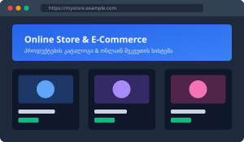

ამ გვერდზე წარმოდგენილია ჩემი სასწავლო და პრაქტიკული პროექტები.
თითოეული მათგანი შექმნილია სუფთა კოდის, სემანტიკური მარკირებისა და
თანამედროვე ვებ-სტანდარტების პრინციპების გათვალისწინებით.
🚀
დეტალური პროექტები
თითოეული პროექტის არქიტექტურა, ფუნქციონალი და ტექნოლოგიური დეტალები
Web Application
1. ონლაინ მაღაზია (E-Commerce Web App)

ილუსტრაცია 1: ონლაინ მაღაზიის ინტერფეისი
პროექტის აღწერა: თანამედროვე ელექტრონული კომერციის ვებ-გვერდი,
რომელიც მომხმარებელს სთავაზობს პროდუქციის კატალოგის დათვალიერებას,
ფასისა და კატეგორიის მიხედვით ფილტრაციას, კალათაში დამატებასა და შეკვეთის გაფორმებას.
CSS3: Flexbox და Grid განლაგება, რესპონსიული დიზაინი
JavaScript: კალათის დინამიკური ლოგიკა
✨ ძირითადი ფუნქციონალი:
1პროდუქტების ბარათები ფასით, ფოტოთი და აღწერით
2ინტერაქციული საყიდლების კალათა
3შეკვეთის გაფორმების სემანტიკური ფორმა ვალიდაციით
დამატებითი ინფორმაცია ტექნიკურ გადაწყვეტებზე▼
პროექტში განსაკუთრებული ყურადღება დაეთმო ხელმისაწვდომობას (a11y) -
ყველა სურათს გააჩნია ადეკვატური alt ატრიბუტი, ხოლო ფორმის ველებს შესაბამისი <label> თეგები.
Content Platform
2. სამოგზაურო ბლოგი (Travel Blog Georgia)
ილუსტრაცია 2: სამოგზაურო ბლოგის ინტერფეისი
პროექტის აღწერა: ბლოგ-პლატფორმა საქართველოს გამორჩეული კუთხეების (სვანეთი, ყაზბეგი, კახეთი)
შესახებ. პლატფორმა შეიცავს ტურისტულ რჩევებს, მარშრუტებსა და ფოტო-რეპორტაჟებს.